O computador passou por diversas transformações ao longo do tempo, acompanhando o avanço das áreas da matemática, engenharia e eletrônica. O que torna díficil apontar somente um inventor, mas podemos dizer que existem diversos colaboradores para o desenvolvimento e aperfeiçoamento dos computadores.
Os computadores de primeira geração funcionavam por meio de circuitos e válvulas eletrônicas. Possuíam o uso restrito, além de serem imensos e consumirem muita energia. Durante este período, foram projetados alguns computadores que marcaram a geração, como, por exemplo: Harvard Mark I, Colossus e ENIAC.

O Mark I foi projetado em 1937 pelo estudante de pós-graduação de Harvard, Howard H. Aiken para resolver problemas avançados de física matemática encontrados em sua pesquisa. A proposta ambicioda de Aiken previa o uso de tecnologias modificadas e disponíveis comercialmente, coordenadas por um sistema de controle centralizado.
Quando o Mark I foi finalizado e entregue a Harvard, em 1944, ele era operado pelo US Navy Bureau of Ships para fins militares, resolvendo problemas matemáticos que, até então, exigiam grandes equipes de humanos. O computador ficou em operação entre os anos 1944 e 1959.

O Colossus tratava-se de uma máquina computacional eletrônica criada durante o período da Segunda Guerra Mundial (1939 - 1945), que tinha o objetivo de ajudar os cientistas britânicos a decodificar o sistema de codificação de Lorenz, usado pelo exército nazista.
Foi construído pelo engenheiro Tommy Flowers, membro da equipe de cientistas da secreta instalação militar onde funcionava a Government Code and Cypher School - GC&CS (Escola de Código e Cifra do Governo).
Seu último modelo foi colocado em operação no dia 1 de junho de 1944. Era utilizado 2400 válvulas eletrônicas em sua construção e um mecanismo de leitura óptica para entrada de dados, que era uma inovação na época.
Durante a Segunda Guerra Mundial, no total 10 computadores foram colocados em operação, mas apenas duas unidades foram preservadas, sendo que uma delas se encontra no Museu Nacional de Computação em Bletchley Park.

Também conhecido como Electronic Numerical Integrator And Computer (Computador e Integrador Numérico Eletrônico), o ENIAC pesava aproximadamente 30 toneladas e ocupava uma área de cerca de 180m2. Ele foi apresentado para o público no dia 14 de fevereiro de 1946 pelos pesquisadores norte-americanos John Eckert e John Mauchly. A máquina contava com um hardware equipado com 700 mil resistores e 18 mil válvulas de vácuo que em funcionamento consumiam vorazmente 200 mil watts de energia.
Sua construção se iniciou em plena Segunda Guerra Mundial (1939 - 1945). Apesar de apresentado ao público em 1946, sua primeira operação ocorreu em julho de 1947.
Depois de uma década de operação, o ENIAC foi subtituido por um rival com o dobro da capacidade, custava o equivalente a US$ 200 mil e tinha apenas 10% do seu tamanho.
A Segunda Geração se inicia no ano de 1959 e se estende até 1965. Neste período, os computadores ainda tinha dimensões muito grandes, eles passaram a funcionar por meio de transistores, os quais substituíram as válvulas que eram maiores e mais lentas. Foi neste período que os primeiros computadores comerciais foram desenvolvidos.

A Terceira Geração inicia-se no ano de 1965 e vai até o ano de 1975. Neste período, os computadores funcionavam através de circuitos integrados, que substituíram os transistores e já apresentaram uma dimensão menor e uma maior capacidade de processamento. Foi neste período que os chips foram criados - com eles, os dados de entrada e saída eram gerenciados por dispositivos periféricos como monitor, teclado ou impressora - e a utilização de computadores pessoais começou a ficar mais popular.


A Quarta Geração começa no ano de 1975 e, alguns acreditam que, estende-se até os dias atuais. Durante este período, os computadores diminuiram ainda mais de tamanho, aumentaram sua velociadade e capacidade de processamento de dados. Foram incluídos os microprocessadores com gasto cada vez menor de energia e capaz de gerenciar todas as funções de um computador - também conhecidas como CPU.
Um exemplo de computadores de quarta geração seria o Apple Macintosh, desenvolvido por Steve Jobs.

Além disso, surgem os softwares integrados, começando a surgir os "computadores de mão", ou seja, os smartphones, iPod, iPad, tablets, entre outros dispositivos móveis; que incluem conexão móvel com navegador web.
:strip_icc()/i.s3.glbimg.com/v1/AUTH_08fbf48bc0524877943fe86e43087e7a/internal_photos/bs/2021/U/F/bVmBq7T7CqtuZ7gNLYfA/2015-06-29-stevejobsiphone2g.jpg "Steve Jobs apresentando o primeiro iPhone")

Alguns estudiosos preferem acrescentar a "Quinta Geração de Computadores" que vem sendo marcada pelo surgimento e aperfeiçoamento da inteligência artificial, computação quântica, nanotecnologia e por sua ampla conectividade. A I.A permite aos computadores reconhecer e aprender a linguagem humana de forma autônoma, sem a intervenção do usuário.
A incorporação da tecnologia quântica permitiria aos computadores trabalhar com enormes quantidades de dados que ainda "não são possíveis" de processar. Já a nanotecnologia favorece a criação de componentes cada vez menores com maiores capacidades de processamento e armazenamento.

Porém, o conceito de "Quinta Geração de Computadores" ainda não foi aceitado por todos, pois ainda não há um consenso sobre o que caracteriza o fim da quarta geração e início dessa geração.
Há algumas décadas atrás, os principais meios de comunicação eram telegráfo e telefone, mas os computadores, desenvolvidos para realizarem cálculos e armazenar informações, tinham fins exclusivamente científicos e governamentais, ou seja, o público não tinha acesso aos computadores da época.
Em 1957, os Estados Unidos e a União Soviética protagonizaram a Guerra Fria, um embate em termos ideológicos, econômicos, políticos, militares e tecnológicos.
Devido ao conflito, os Estados Unidos estavam tentando encontrar uma maneira de proteger suas informações e comunicações no caso de um ataque nuclear soviético. As inovações que tentaram resolver esse problema levaram ao surgimento da Internet.
Durante o período da Guerra Fria, os EUA criaram a DARPA (Defense Advanced Research Projects Agency, ou Agência de Projetos de Pesquisa Avançada de Defesa, em português), que foi responsável pela pesquisa e desenvolvimento de novas tecnologias para fins defensivos e militares, entre elas, a rede de computadores.
Em 1961, Leonard Kleinrock apresentou sua teoria de comutação de pacotes, alegando que dois servidores poderiam se comunicar para enviar e receber informações transportadas por pacotes por meio de uma rede de computadores. Esses pacotes poderiam seguir caminhos diferentes e ser refeitos na chegada, tornando a comunicação mais eficiente.
Porém, no ano de 1966, com a entrada do Roberts na DARPA, ele desenvolveu o plano da ARPANET para desenvolver a primeira rede de comutação de pacotes junto a Robert Kahn e Howard Frank.
Embora o primeiro protótipo de uma rede computada por pacotes descentralizada já tivesse sido projetada, ganhou visibilidade somente em 1969, quando um computador da Universidade da Califórnia (UCLA) se conectou com sucesso a outro computador do Stanford Research Institute (SRI). Porém, a primeira conexão também foi o primeiro erro de transmissão de dados, pois a mensagem recebida foi "LO" e não "LOGIN".
Em 1974, Robert Kahn e Vinton Cerf desenvolveram uma nova versão do protocolo que respondia a um ambiente de rede de arquitetura aberta. Esse novo protocolo foi chamado de TCP/IP.
O protocolo TCP/IP facilitava a comunicação entre redes sem a necessidade de que estas fizessem alterações em sua interface. Além de garantir que nenhum pacote de informações fosse perdido e que esses pacotes chegassem na ordem em que haviam sido enviados. Esse protocolo logo foi adotado pela ARPANET.
Porém, o avanço não parou aí. Em 1989, Tim Berners-Lee desenvolveu a World Wide Web, que funciona como um sistema de distribuição de documentos de hipertexto (HTTP) interconectados e acessíveis por meio de um navegador web conectado à internet.
O modelo Cliente-Servidor é uma arquitetura de rede amplamente ulitizada na computação moderna. Nesse modelo, os dispositivos são divididos em duas categorias principais: o cliente e o servidor. O cliente é o dispositivo que solicita serviços ou recursos do servidor, enquanto o servidor é o dispositivo que fornece esses serviços ou recursos.
Funcionalidades como a troca de e-mail, acesso à internet ou acesso a um banco de dados, são construídos com base no modelo cliente-servidor. Por exemplo, um navegador web é um programa cliente que resigna às informações armazenadas num servidor web na internet. Esse programa, por sua vez, pode encaminhar o pedido para o seu próprio programa de banco de dados do cliente que envia uma solicitação para um servidor de banco de dados em outro computador do servidor para recuperar as informações do usuário, que retorna ao cliente, através do navegador, os resultados para o usuário.
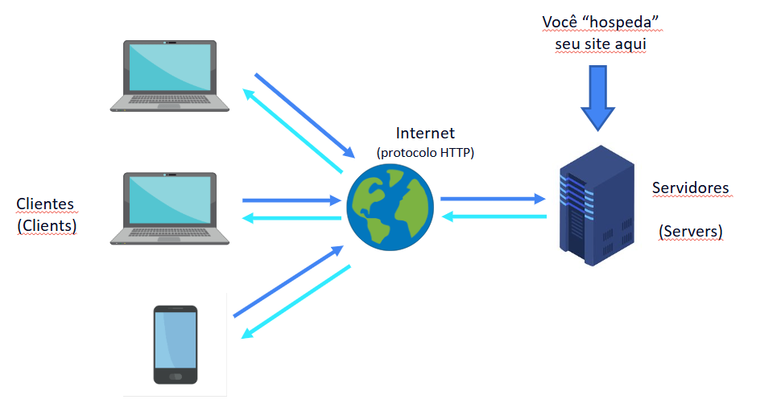Essa informação recebida pelo cliente, é resultado do retorno de certos arquivos que estão no servidor, como, por exemplo, arquivos HTML, CSS, Javascript, imagens, entre outros arquivos que se encaixam na requisição do usuário. Mas isso depende muito da velocidade de conexão do cliente e do tamanho dos arquivos disponibilizados, ou seja, se a velocidade de conexão estiver fraca, o servição pode não responder da forma desejada ou não carregar os arquivos para o usuário.
Os navegadores disponibilizam um cache, que armazena os arquivos para a abertura da aplicação. Esse cache permite que o usuário acesse o recurso de forma mais rápida, funcionando como uma espécie de atalho, pois, como os arquivos estão presentes na máquina do usuário, a aplicação não precisa solicitar novamente os arquivos do recurso para gerar os resultados para o cliente. Mas ao recarregar a página, os arquivos são requisitados novamente e os caches antigos do usuário são deletados e substituídos pelos novos arquivos atualizados.
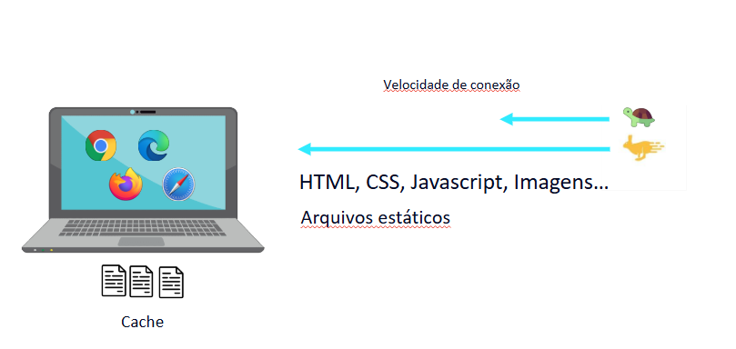Atualmente, os desenvolvedores têm que se preocupar com a responsividade de suas aplicações e com a compatibilidade com os navegadores, isso para conseguirem atender todos os tipos de clientes na rede, pois existem diferentes tipos de telas e locais onde se pode acessar as aplicações/site.
Os navegadores, também conhecidos como browsers, são programas criados por empresas, utilizados para abrir/executar arquivos, como arquivos HTML, CSS e Javascript, para gerar página para o usuário. Esses navegadores, embora tenham suas exclusividades, eles seguem um padrão, que é estabelecido pela W3C. As permissões/compatibilidade dos navegadores podem ser visualizados no site: HTML Reference - Browser Support.
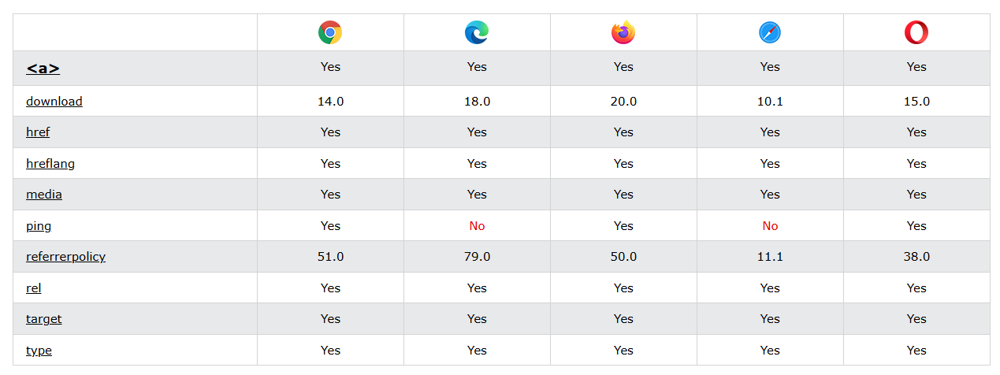Uma Aplicação Web é um software que é executado em um navegador da Web, o que conecta a empresa, que precisa trocar informações e prestar serviços remotamente, com os clientes de forma conveniente e segura. Eles permitem que usuário acesse as funcionalidades mais complexas sem precisar instalar ou configurar nenhum software externo. Ou seja, são programas que abrem/executam arquivos, como HTML, CSS e Javascript, para retornar os recursos requisitados pelo usuário somente com auxílio do navegador.
No entanto, existem também as aplicações nativas, que são programas de computador projetados especificamente para um determinado "ambiente" de usuário, ou seja, aplicações que são disponibilizadas em diferentes dispositivos, permitindo que o usuário baixe-o no dispositivo que o deixa mais confortável. Um grande exemplo, são as aplicações móveis, as quais são desenvolvidas usando um código de programação específico e, na maioria das vezes, diferente das utilizadas pelas aplicações web.
Os Servidores desempenham um papel fundamental, atuando como um dos pilares da internet e da tecnologia. Um servidor é um equipamento ou um software, que demanda bastante potêncial, pois, geralmente, lida com diversos usuários ao mesmo tempo, fazendo dele um componente essencial das redes online, permitindo a comunicação, transação e o acesso a informações em uma escala global.
A função principal de um servidor é armazenar, processar e entregar páginas da web a usuários, além de gerenciar e-mails, hospedar banco de dados, entre outras tarefas. Eles permitem que múltiplos usuário compartilhem recursos de forma eficiente, reduzindocustos e aumentando a capacidade de processamento disponível para tarefas complexas.
O servidor necessita de acesso à internet para realizar a conexão entre ele e o cliente, porém, não é obrigatório, pois existe a possibilidade de conectar-se com o cliente através de uma rede local (LAN) utilizando um computador desenvolvido para realizar funções de servidor. Eles podem possuir funções especifícas, podendo ser apenas para armazenar arquivos, para gerenciar a segurança dos clientes, servidores para e-mail, somente para web, entre outras funcionalidades.
Quando um usuário acessa, por exemplo, um website, ele envia para o servidor uma solicitação, que é recebida através de sua conexão de rede. O sistema operacional do servidor determina qual software de aplicação deve lidar com a solicitação. Ao processar a solicitação, no caso do website, o servidor busca a página web em seu armazenamento e envia de volta ao dispositivo do usuário através da internet.
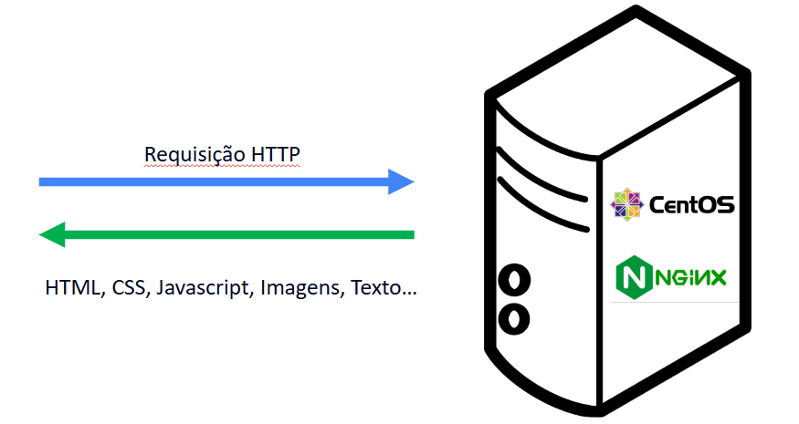Um servidor consiste em hardwares potentes e robustos e softwares especializados, onde cada um desempenha um papel vital na operação geral do sistema.
Estes componentes são projetados para ser significativamente mais potente e confiável do que o de um computador pessoal comum. Isso inclui:
O software de um servidor varia de acordo com o tipo e a função específicados do servidor, mas geralmente inclui:
A Linguagem de Programação, diferente das linguagens naturais, foram criadas para interagir com uma máquina, representando uma sequência de instruções ou ordens que permitem a um computador resolver um problema ou desempenhar um função.
Sendo assim, a linguagem de programação é um sistema de comunicação estruturado, composto por símbolos, palavras-chave e regras de semânticas e sintáticas.
A linguagem permite que um programador especifique precisamente quais os dados que o computador irá atuar, como estes dados serão armazenados ou transmitidos, e quais ações devem ser tomadas de acordo com as circunstâncias.
Segundo o site da RedMonk, as linguagens de programação mais utilizadas são:
| 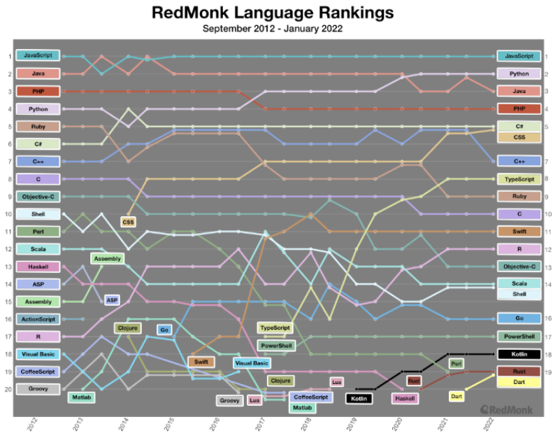 |
|
É um pequeno programa que é incorporado em uma página da web. Este programa é baixado do lado do cliente a partir do servidor, junto com a página da web HTML na qual foi incorporado. O navegador interpreta e executa o código e, em seguida, exibe o resultado na tela do usuário.
Entre as linguagens client-side, há o Javascript, que, através dele, é possível manipular a página do usuário diretamente, fazendo coisas dinâmicas que vão desde mudar o valor de um campo do formulário até criar uma área redimensionável que pode ser arrastada pela página, entre outras funcionadades para deixar a página mais dinâmica.
É a linguagem que rodará "por trás dos panos", fornecendo a lógica principal da aplicação. Funciona da seguinte maneira: sempre que o usuário faz HTTP Request, o pedido é enviado para o servidor. A linguagem server-side recebe o requerimento e faz o processamento. Depois, transforma o resultado e envia para o navegador. É com ela que é possível verificar se o usuário está logado, buscará informações no banco de dados, entre outras funcionalidades que não são percebidas diretamente pelo usuário.
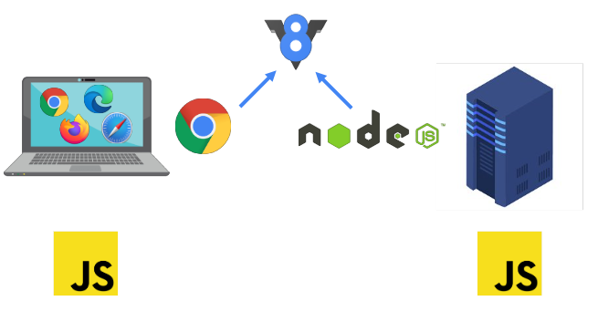A web é construída em torno de várias linguagens e tecnologias. Entre elas, uma das mais conhecidas está o HTML (sigla para HyperText Markup Language), que é frequentemente utilizada para criar páginas web. Ao contrário das linguagens de programação, que são usadas para criar algoritmos e executar ações lógicas, o HTML é utilizado para marcar o conteúdo de uma página web, fornecendo estrutura e semântica ao conteúdo, permitindo que os navegadores exibam a página de forma correta.
Além disso, as linguagens de programação podem gerar estruturas de controle, como loops e condicionais, para tomar decisões e repetir ações, e pode ser utilizado variáveis para armazenar e manipular dados. Recursos que estão ausentes no HTML.
Exemplo de HTML:
<p> Eu curto demais <strong> programar </strong>! </p>
Resultado:
Eu curto demais programar!
Antes de começar a construir sua primeira página web utilizando HTML, precisa prepara o ambiente. Para isso, recomendo a utilização do Visual Studio Code, pois, além de apresentar diversas ferramentas para auxiliar no desenvolvimento da página, e de outras linguagens, ele é uma ferramenta gratuita, de código aberto e pode ser utilizada em qualquer sistema operacional. Porém, pode ser utilizado qualquer editor de texto simples para poder desenvolver uma página web.
Ao terminar de instalar o Visual Studio Code, você deve ir para a aba de extensões e baixar a extensão Live Server, que permitirá abrir a sua página em um servidor local para ver as modificações do site em tempo real e poder testar a página sem precisar abrir ou hospedar no navegador.
Primeiramente, ao criar um arquivo, deve-se nomeá-lo de index.html, nome que é muito utilizado para representar a página principal do site. Este nome é utilizado pelos desenvolvedores de forma convencional, tornando-se um padrão nos dias de hoje.
o HTML consiste em uma série de elementos, que são usados para estruturar a página web. Esses elementos, são denominados tags, e, para que elas funcionem, necessitam de uma tag de abertura e uma tag de fechamento. A tag de abertura, envolve um elemento em parênteses angulares < >, o que indica onde o elemento começa, ou melhor onde seu efeito se inicia.
Já a tag de fechamento, além de envolver o elemento em parênteses angulares < >, ele também possui uma barra / que é colocada antes do nome do elemento. Indicando onde o elemento acaba.
Para iniciar a estrutura do código HTML, utilizamos a tag <html>, indicando o início e o fim da sua página web. Tudo que precisa ser carregado para a formação da sua página, deve estar entre essas tag, e, por isso, é conhecido como elemento raiz.
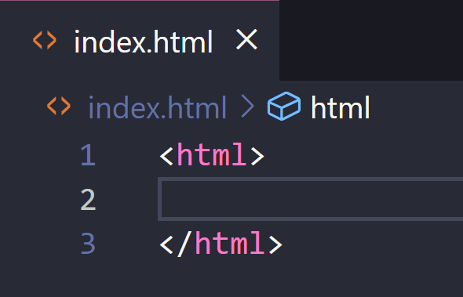Após abrir a tag <html>, o código divide-se em duas partes que separam a estrutura da página, com funcionalidades que se complementam. A primeira tag a ser posicionada é a <head>, que age como um recipiente de tudo o que deseja incluir na página web, mas que não deve aparecer para o usuário em questão. Para começar, vamos atribuir um título para a página utilizando a tag <title>, definindo, assim, o título da página, que será carregado na guia do navegador.
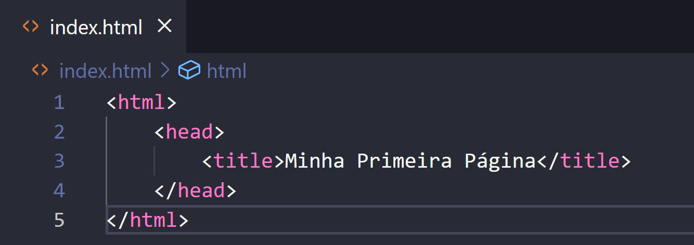Outra tag importante para o desenvolvimento da sua página web, é a tag <body>. Dentro dela, contém o conteúdo que você deseja mostrar ao público que visitará sua página, podendo colocar imagens, hyperlinks, parágrafos de texto, etc. para deixá-la o mais completo possível.


Como mencionado anteriormente, as tags são elementos usados para estruturar a página web e elas possuem uma tag de abertura, o conteúdo e uma tag de fechamento. A W3School desenvolveu uma página, onde apresentam todas as tags do HTML, para auxiliar/informar os desenvolvedores a encontrarem algo que mais se encaixa para a aplicação em seu site.
Cada tag atribui uma funcionalidade/comportamento diferente da outra. Por exemplo:
Os atributos contém informação extra sobre o elemento e ela não fica explícita para o usuário no conteúdo real. Eles possuem atributos globais que podem ser atributos à todas as tags do HTML, como, por exemplo:
Mas existem também atributos exclusivos, que pertencem a uma tag e, geralmente, moldam o seu comportamento diante da página web. O <input>, por exemplo, possui o atributo type="" que define o tipo de informação que o usuário pode inputar no campo criado.
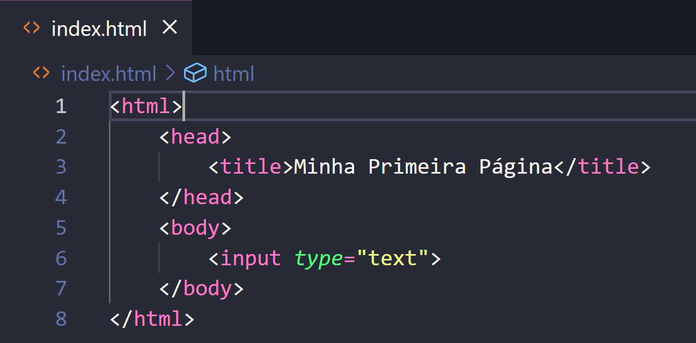Os elementos de cabeçalhos permitem especificar que certas partes do seu conteúdo são títulos ou subtítulos, podendo atribuir até seis níveis de título (<h1> ao <h6>), embora, geralmente, só é utilizado até o quarto nível.
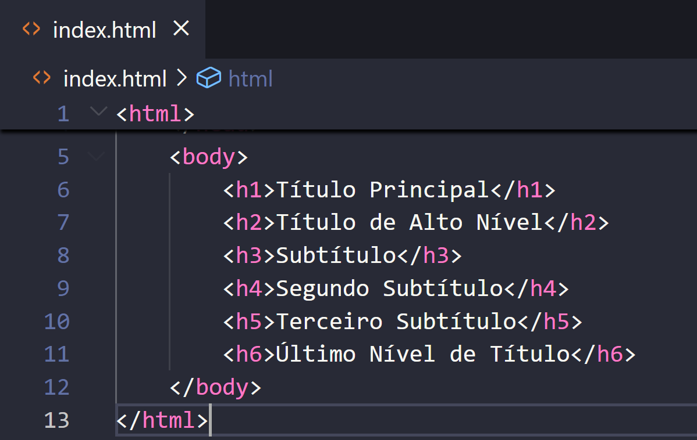Os elementos <p> são para criar e conter um parágrafo de texto, o que será utilizado com frequência durante a criação do site.
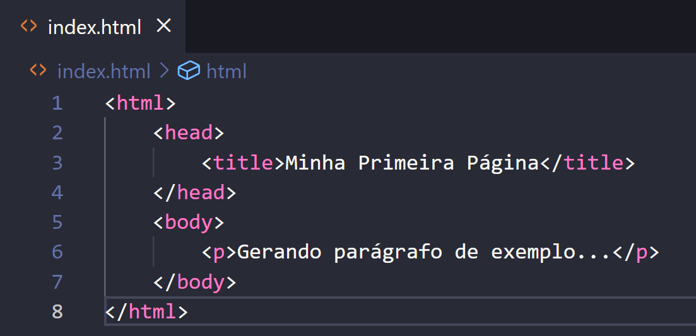Existem também elementos de modificação de texto, como, por exemplo:

O HTML apresenta duas formas de criar listas: ordenadas e não ordenadas. A Lista Ordenada é para listas onde a ordem dos itens importa, como, por exemplo, uma página/livro receitas. Esses elementos são envolvidos pela tag <ol> e os itens são gerados através da tag <li>.
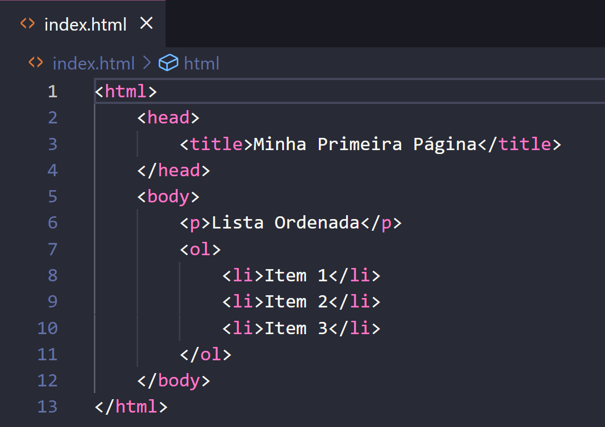A Lista Não Ordenada é para listas onde a ordem dos itens não importa, como, por exemplo, uma lista de compras. Esses elementos são envolvidos pela tag <ul>.
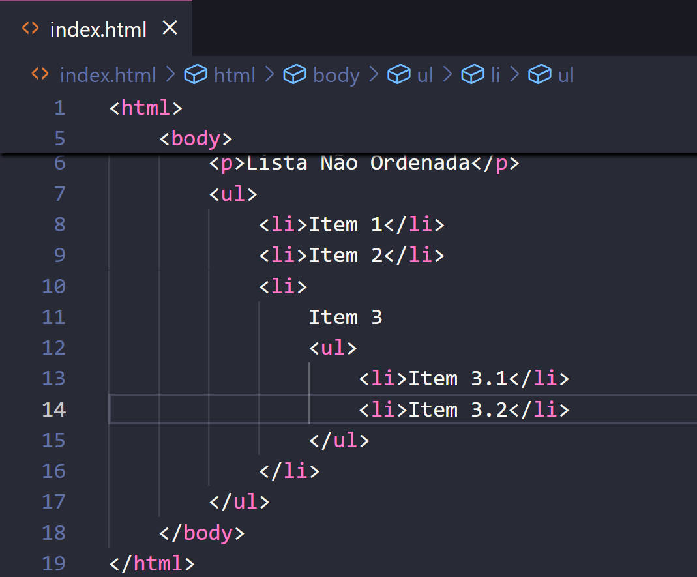Os Hyperlinks podem ser adicionados através da tag <a> - que é a abreviação de "âncora" - e esses links podem redirecionar os usuários para outras páginas interligadas ao assunto ou, até mesmo, para regiões do mesmo site.
Para transformar o texto do seu parágrafo em um link, siga estas etapas:
O aprendizado de HTML é um dos primeiros passos para compreender o universo do desenvolvimento web. E, com os conceitos e práticas mostradas aqui, como estruturação de conteúdo utilizando elementos como títulos, parágrafos, links, listas e imagens, é possível criar páginas web simples e eficazes, além de compreender a base que sustenta os sites modernos.
Dominar o HTML é essencial para quem deseja evoluir para tecnologias mais avançadas, como CSS e JavaScript, que apliam as possibilidades de design e interatividade nas páginas web. Além disso, essa linguagem é muito utilizada, tornando-se uma habilidade valiosa tanto para profissionais da tecnologia quanto para quem busca autonomia na criação de conteúdo online.
Praticar o que foi aprendido, explorar novas tags e aprofundar-se nos conceitos de acessibilidade e semântica são os próximos passos para solidificar esse conhecimento e criar páginas mais ricas em conteúdo e mais eficazes.
Voltar ao início da página